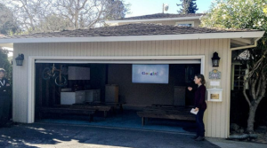

A história do Google:
O Google foi fundado em 4 de setembro de 1998 por Larry Page e Sergey Brin, estudantes da Universidade de Stanford. A empresa começou com o motor de busca baseado na tecnologia PageRank e, hoje, é uma gigante de tecnologia e subsidiária do conglomerado Alphabet
A Origem (1996–1998):
O Projeto: A iniciativa começou como um projeto de pesquisa universitário em 1996. A ideia original para o buscador chamava-se BackRub e utilizava o algoritmo PageRank para medir a importância de um site com base na quantidade de links que apontavam para ele.
O Nome:
O nome "Google" foi inspirado no termo matemático "Googol" (um 1 seguido de 100 zeros), simbolizando o objetivo da empresa de organizar a imensa quantidade de informações da internet.

A Garagem:
O primeiro escritório formal funcionou na garagem de Susan Wojcicki (que futuramente seria CEO do YouTube), localizada em Menlo Park, Califórnia.
